Soolio Ice Cream
Identity and packaging for an ice cream brand that celebrates indulgence and comfort.
- Discipline
- Brand identity and packaging
- Context
- Personal project
- Role
- Brand and packaging designer
- Deliverables
- Name, logo, colour, packaging
- Tools
- Adobe Illustrator, Photoshop
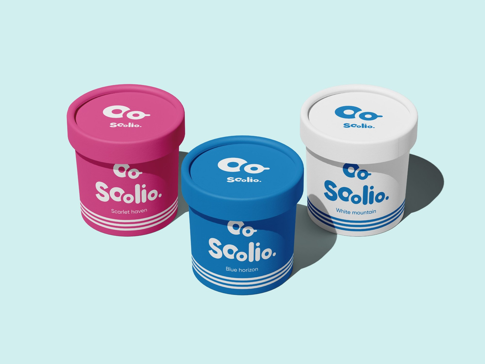
The idea
Soolio celebrates the balance between indulgence and comfort. The goal was a consistent identity and packaging that feel as good as the product tastes.
Who it’s for
Primary audience
Families with kids, teenagers and young adults.
Secondary audience
Older adults.
The name
Soolio blends “soul” and “delicious.” The “lio” ending keeps it short and playful.
Moodboards
I gathered two moodboards to find the brand’s feel: bright, playful colour, sprinkles and scoops, and words like delicious, refreshing, sweet and tasty.
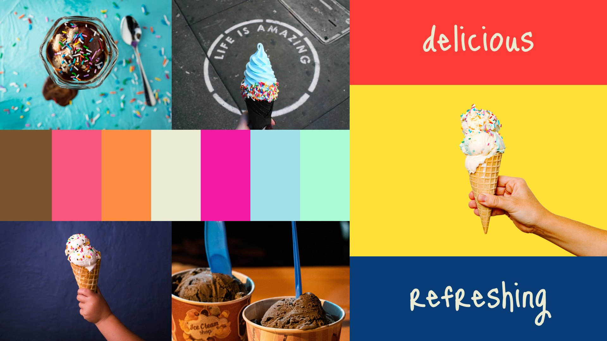
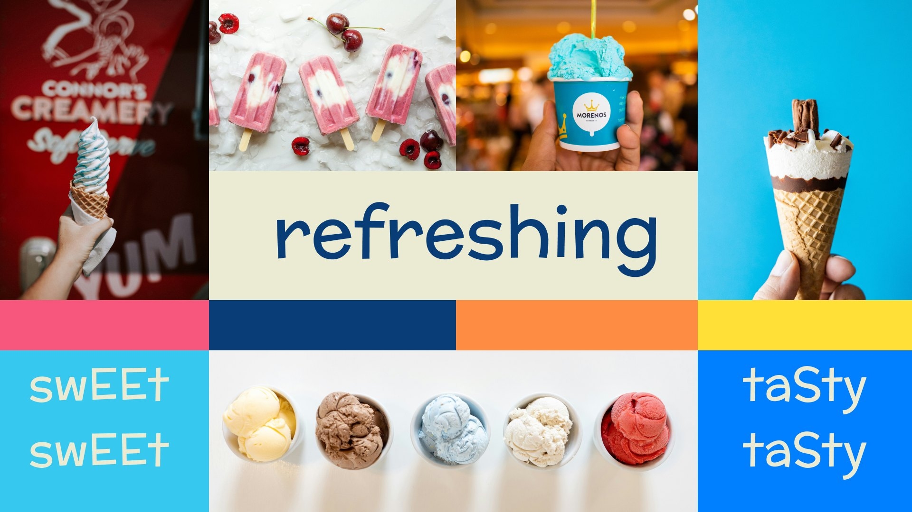
The logo
Exploring directions
Every idea I sketched played on the double O at the heart of the name. In my first direction, the two O’s sat inside a bold, looping S that wrapped around the whole word. It was expressive, but the swirls tangled the letters together and the name became hard to read at a glance. A logo that has to work on a small cup lid can’t make people work to read it, so I set it aside.
Finding the character
In the second direction, I let the double O step forward and become a character: the larger O is a face, and the smaller O is a scoop of ice cream, held right at its mouth. It turns the name into a tiny moment of enjoyment, which is exactly what Soolio is about. The rest of the word stayed simple and rounded, so the name reads clearly while the mark brings the personality. This was the direction I chose.
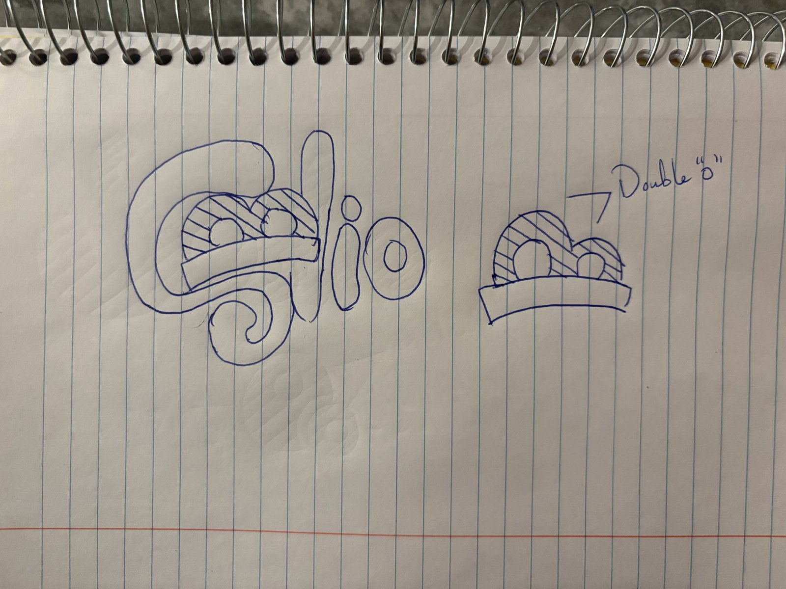
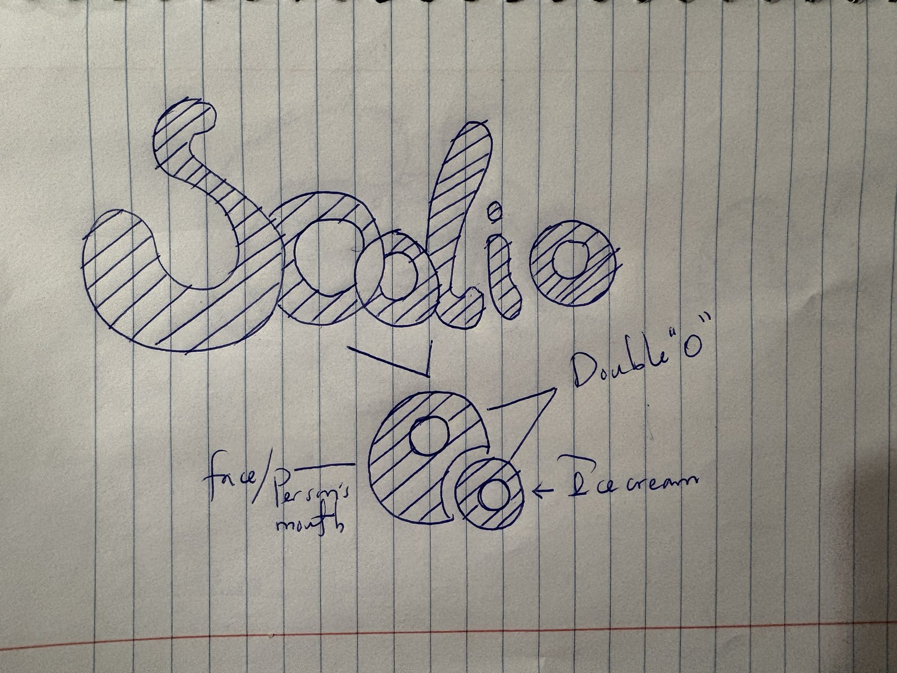
I refined the chosen sketch into a clean, rounded wordmark and built three versions. The primary logo stacks the mark over the wordmark and “ice cream.” The secondary logo is the wordmark on its own, and the logo mark works alone where space is tight, like on lids. To bring the character to life, I also explored a short logo animation: the face takes a bite of the scoop and sprinkles burst out.
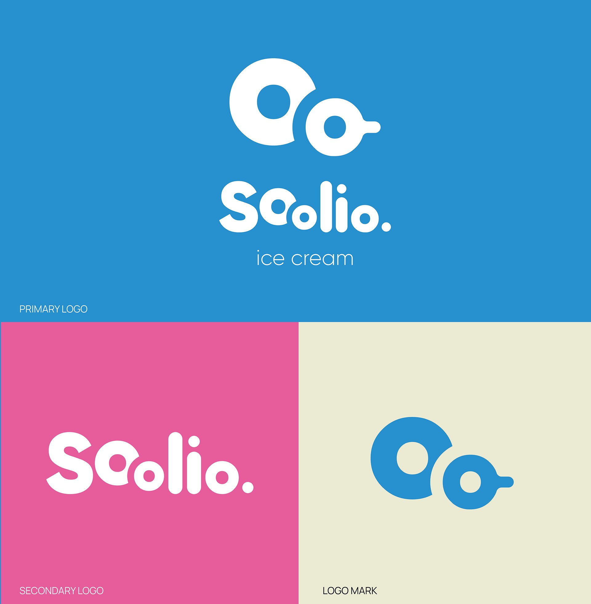
Visual identity
The moodboards were full of colour, from sunny yellow to mint and navy. For the brand itself, I narrowed it to four colours, each taken from a classic ice cream flavour, so the colour of the pack tells you what’s inside before you read a word. Blue gives the brand its cool, refreshing signature, white stands for vanilla’s simplicity, pink for strawberry and fruit, and chocolate for cocoa. Keeping it to four makes the range easy to shop at a glance and keeps every pack recognisably Soolio.
Packaging
The packaging keeps one simple layout across the range: the double-O mark, the wordmark, the flavour name and three stripes. Only the colour changes from flavour to flavour.
The flavour names came from friends. I asked them to name each colour, and picked the four that felt most like little places you’d want to visit: Blue horizon, Scarlet haven, Cocoa canyon and White mountain.
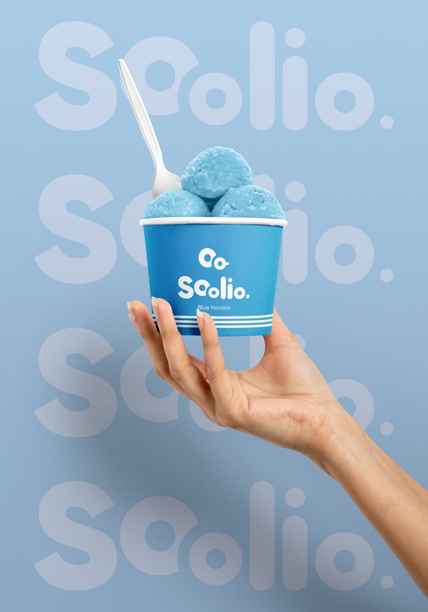
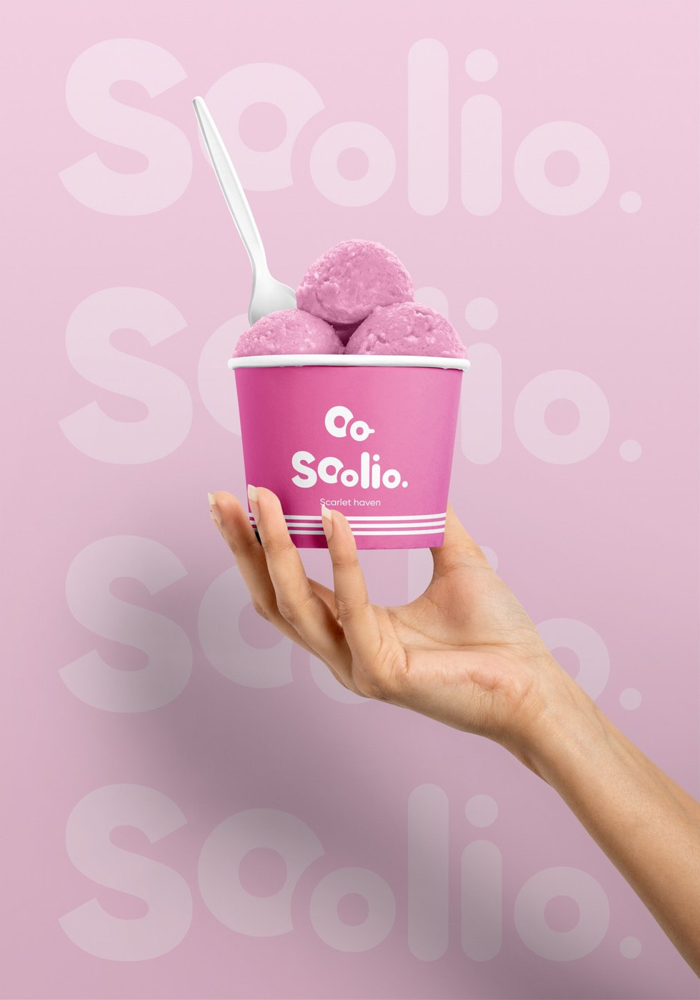
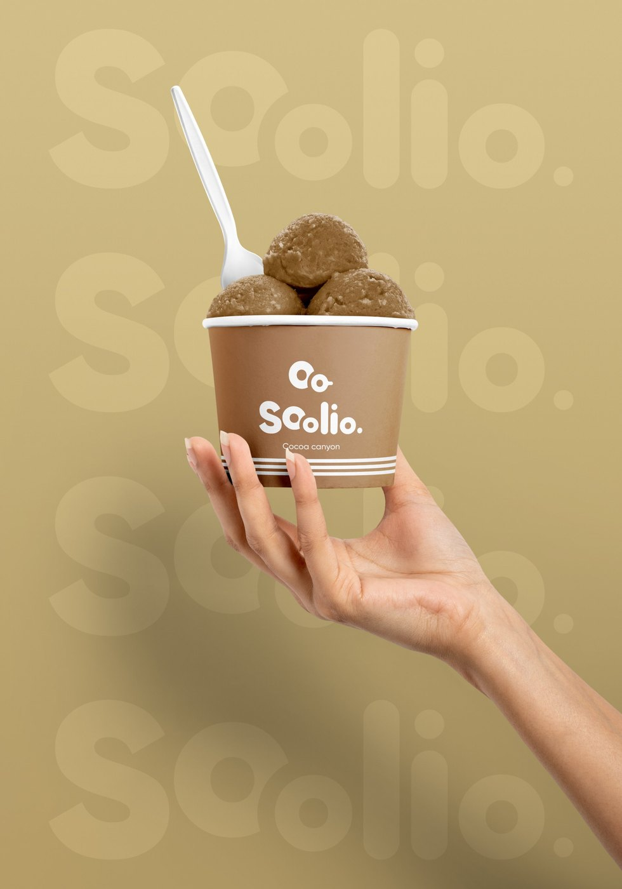
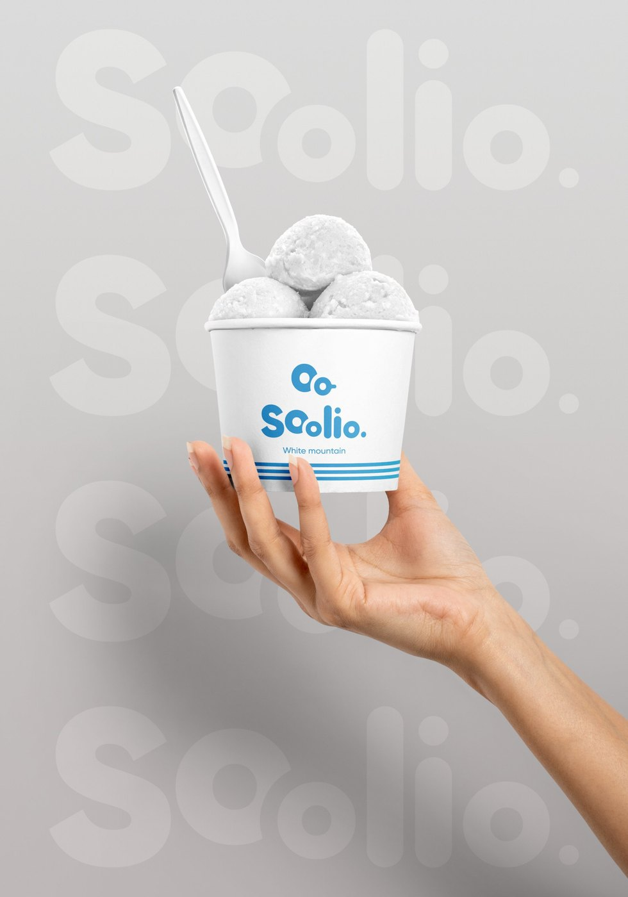
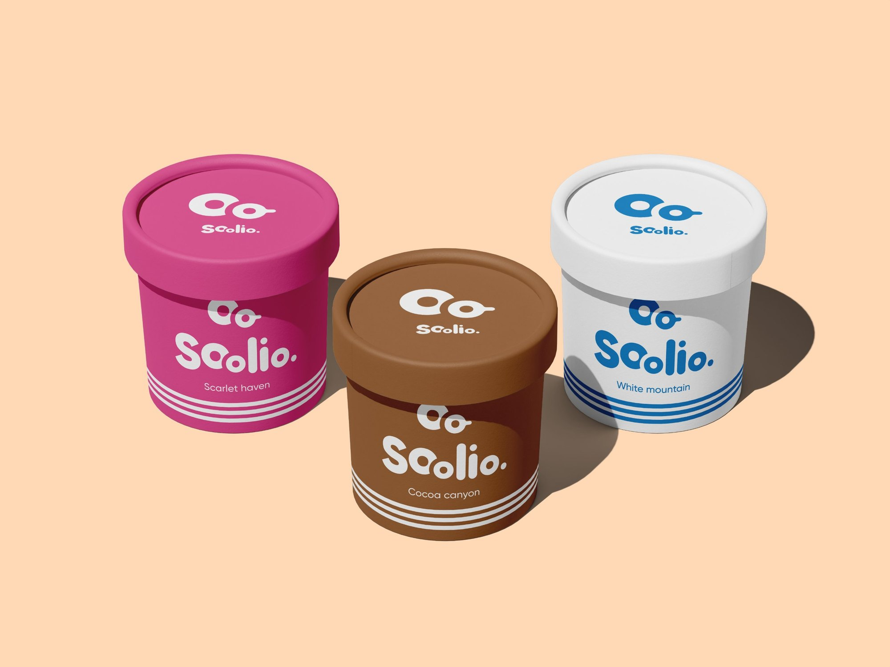
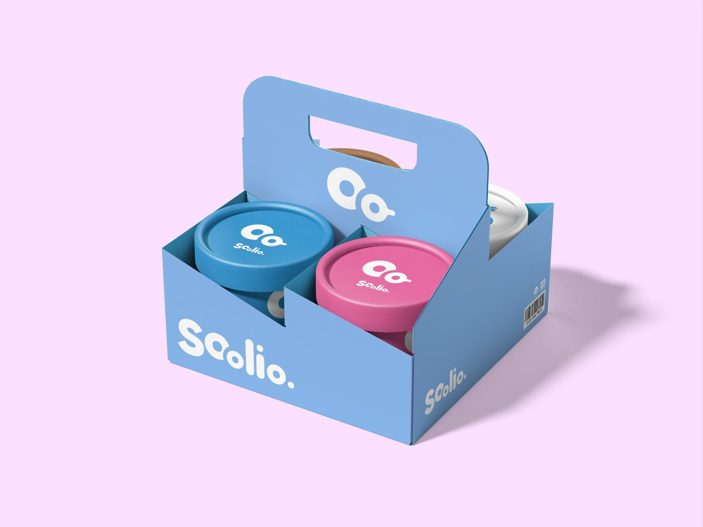
Takeaways
Soolio started as a personal side project, with no client and no brief, just a chance to play. That freedom was the challenge. With nobody setting limits, I had to set my own, and it pushed my creative side further than a typical brief would.
Exploring the logo was the most fun part. Sketching freely let me try bold ideas, like the looping S, before deciding what actually worked. It taught me that personality can’t come at the cost of legibility: the chosen logo keeps the name simple and puts all the character into one small detail, the double O.
It also showed me how far a tight system can go. With one layout and four colours, every pack feels part of the same family, and bringing friends in to name the flavours made the brand feel warmer and more human.